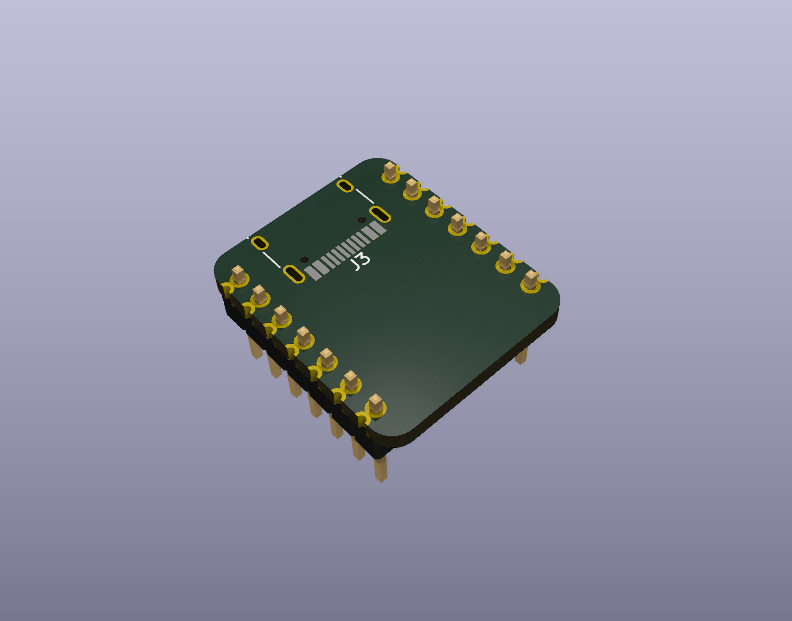

This project template is the basis of an expansion board for the Seeed Studio XIAO and Adafruit QT Py form factors. It includes a PCB edge matching the outline of the Xiao PCB with connectors and mounting holes placed correctly to align the two boards.
Note: due to the fact that the official 3D library does not include "long" or "stacking" female headers, the default Connector_PinSocket_2.54mm models were used.

(c) 2024 Kelly Helmut Lord